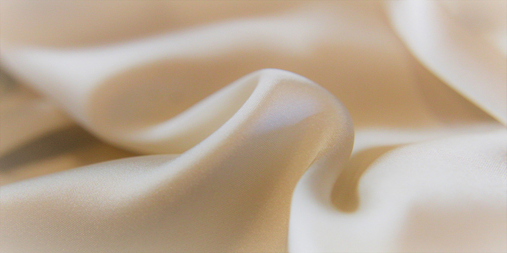
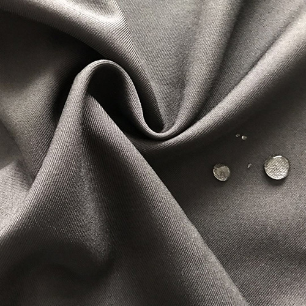

home>사업소개> 섬유무역
섬유무역

“혁신적인 섬유기술과 글로벌 무역네트워크로 고객가치를 극대화 합니다”
- 
-
- TEXTILE
BUSINESS. - 효성티앤씨의 섬유 사업부문은 기술력과 품질, 고객서비스 면에서 세계적인 경쟁력을 갖추고 스판덱스, 나일론, 폴리에스터 등의 원사와 직물, 염색 제품을 공급하며 세계 화섬산업을 리드하고 있습니다. 또한 전 세계에 걸쳐 50여 개 해외지사 네트워크를 갖추고 있는 무역 사업부문은 철강, 화학분야를 중심으로 유통과 물류사업 등 다양한 분야에서 최상의 마케팅 서비스를 제공하고 있으며, 풍부한 경험을 바탕으로 신상품 및 신시장을 개척하며 세계무역의 중심에서 지속적으로 성장하고 있습니다.
- TEXTILE
-
효성티앤씨(주)
- 세계인이 사랑하는 Global Life 선도 기업
- 효성티앤씨㈜는 Global No.1 스판덱스 브랜드 '크레오라'를 비롯, 나일론, 폴리에스터 원사와 직물, 염색 가공제품을 생산·공급을 통해 Global 섬유업계를 리드하는 섬유 종합메이커임과 동시에 철강·화학분야를 중심으로 유통과 물류를 통해 전 세계 기업과 소비자를 연결시키는 무역 부문으로 사업을 이루고 있습니다.
-

스판덱스
- 세계 최고의 품질로 사랑받는 글로벌 No.1
- 효성은 독자적인 생산기술과 R&D, 글로벌 마케팅 활동을 바탕으로 스판덱스 세계시장 점유율 No.1 브랜드 'creora®'를 보유한 세계 최대의 스판덱스 메이커로 성장하였습니다. 크레오라(creora®)는 최고의 품질과 가치를 바탕으로 고객들의 니즈에 부합하는 신제품을 끊임없이 개발하여 섬유업계의 새로운 지평을 열어가고 있습니다.
-
나일론원사
- 글로벌 섬유산업을 리드하는 세계일류의 제품
- 효성은 세계적인 나일론 원사 제조업체의 하나로, 50여 년간 축적된 생산 노하우를 바탕으로 우수한 품질과 다양한 기능을 갖춘 나일론 원사를 지속적으로 공급하여 , 전세계 고객들에게 사랑 받고 있습니다. 고급 란제리와 스포츠웨어 및 산업자재용 원사 ‘토프론(TOPLON)’을 근간으로 하여, 도전사(MIPAN corona)신규 개발 소재인 냉감사 Aqua-X, 고광택사 Rexy, 광발열사MIPAN Aeroheat, 등을 포함하는 고기능성 원사를 판매하고 있습니다.
-
폴리에스터원사
- 일반 원사부터 고기능성 특수사까지 차별화된 제품
- 국내 폴리에스터 원사 메이커의 선두주자인 효성은 고객의 높은 가치창출을 위해 일반 원사부터 고기능성 특수사에 이르기까지 다양하고 차별화된 폴리에스터 원사를 생산하고 있습니다. 면 같은 폴리에스터 원사(cotna), 냉감사(askin), 소취사(freshgear), 광발열사(aeroheat), 잠재권축사(Xanadu), 원적외선사(aerogear) 등 첨단 기능성 원사를 개발하였습니다. 친환경 섬유 소재 개발에 박차를 가하고 있으며, 혁신적인 설비 및 공법을 도입하며 완벽한 품질관리 시스템을 통해 고객들에게 항상 최고 수준의 제품을 공급하고 있습니다.